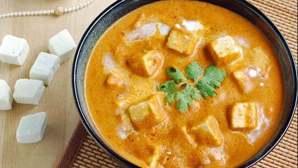

MANGO SHAKE
Mango Shake is a cool and tempting fruit drink prepared by simply blending ripe mango pieces,milk and sugar. sweet and seasonal cold beverage drink made from fresh mangoes, ice cream and full cream milk. it is an ideal refreshing drink for the hot and humid summer season by lowering the body temperature. the recipe primarily uses fresh mangoes to get the consistency but can also be prepared with frozen and mango pulp. Here i am going to share a quick and easy mango shake recipe,i hope you will like it.
Ingredients
- 1 cup mango cube (fresh / frozen)
- 1 tbsp sugar
- 2 scoops vanilla ice cream
- ½ cup milk chilled
- few nuts chopped
Instructions
- firstly, in a blender take 1 cup ripened mango.
- also add 1 tbsp sugar and 2 scoops vanilla ice cream.
- blend smooth adding ½ cup chilled milk.
- finally, serve mango milkshake with ice cream topped with few chopped nuts.
Manchurian

This one is a favourite for people who like Indo-Chinese food. Deep-fried mixed vegetable dumplings in a spicy gravy, the consistency of which you can adjust depending on if you want to enjoy it as a starter or main course. You can easily find veg Manchurian on restaurant menus across India but you ought to try out this Manchurian recipe in your home kitchen too. It uses very simple ingredients, does involve a bit of chopping and prep but the final dish is well worth the effort! This vegetarian Manchurian is one of the best examples of fusion food.
Ingredients
- Cabbage grated 1 medium
- Carrot grated 1 medium
- French beans finely chopped 8-10
- Spring onions with greens finely chopped 3 medium
- Green capsicum finely chopped 1 medium
- Salt to taste
- Refined flour (maida) 1/4 cup
- Cornflour/ corn starch 1/4 cup
- Oil to deep fry
- Oil 2 tablespoons
- Ginger finely chopped 4-6 cloves
Instructions
- Mix three tablespoons of cornflour in one cup of water. Reserve spring onion greens for garnish. Mix cabbage, carrot and French beans in a bowl and thoroughly rub in one teaspoon of salt.
- Add spring onion, capsicum, refined flour and one-fourth cup of cornflour. Mix thoroughly. Shape into lemon sized balls.
- Heat sufficient oil in a wok and deep-fry vegetable balls in small batches for three to four minutes on medium heat or until golden brown. Drain on absorbent paper.
- Heat two tablespoons of oil in a wok or a pan and stir fry the ginger and garlic half a minute. Add the celery, green chillies and stir-fry for half a minute more.
- Add soy sauce, sugar, MSG and salt. Stir in vegetable stock and bring to a boil. Stir in cornflour mixture and cook for a couple of minutes or until the sauce starts to thicken, stirring continuously.
- Add the fried vegetable balls, vinegar and mix well. Serve hot, garnished with the reserved spring onion greens.
Shahi Paneer
Shahi Paneer a rich Indian dish that can grace any special occasion, paneer is cooked in creamy makhni sauce. In this gravy cashewnuts add that shahi or royal touch. Delicately flavoured with aromatic spices the sauce is full of flavours from tomatoes, butter, cashewnuts and cream. It does come with its share of calories, but one bite and you will realize it is all worth it. Freezing a batch of makhani sauce comes in handy as you can dish up a number of delicious versions of this dish, using vegetables or grilled chicken instead of paneer.For other receipes please click here
Ingredients
- Paneer (Cottage cheese) cut into cubes 400 grams
- Oil 2 tablespoons
- Onions finely chopped 2 medium
- Cashewnuts 15-20
- Tomatoes finely chopped 5 medium
- Red chilli powder 1 teaspoon
- Coriander powder 1 tablespoon
- Salt to taste
- Butter 2 tablespoons
- Cream 1/2 cup + for garnishing
- Kasoori methi powder 1 teaspoon
- Garam masala powder 1 teaspoon
- Green cardamom powder 1/4 teaspoon
Instruction
- Heat oil in a non stick kadai. Add onions and cashewnuts and sauté lightly. Add tomatoes and cook for 10-12 minutes or tomatoes are pulpy.
- Add red chilli powder, coriander powder, turmeric powder, salt and sauté.
- Transfer this mixture into a mixer jar, cool and grind to a paste with a little water. Transfer the mixture into the same kadai.
- Add butter, cover and cook on low heat for 10 minutes
- Add cream and mix well. Add paneer, kasoori methi powder, garam masala powder, green cardamom powder and mix well.
- Transfer into a serving bowl, garnish with some cream and serve hot.
I hope you try them out and enjoy them!